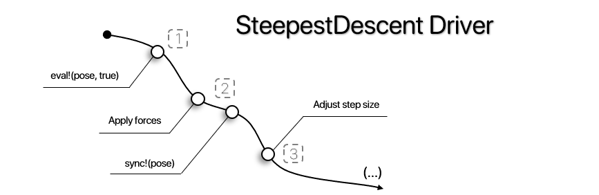

Steepest Descent Driver
The Steepest Descent Driver introduces a simple gradient descent, calculating the forces acting on each atom and applying a relaxing translational movement, until convergence or end of simulation.
ProtoSyn.Drivers.SteepestDescent — TypeSteepestDescent(eval!::Union{Function, EnergyFunction}, callback::Opt{Callback}, max_steps::Int, force_tolerance::Float64, max_displacement::Float64)A SteepestDescent Driver instance. As such, this object is callable as a functor with the following signature:
(driver::SteepestDescent)(pose::Pose)This simulation employs the calculation of forces by an evaluating function or EnergyFunction instance (eval!) to relax and optimize a given Pose pose. This process will run for a maximum of max_steps iterations, or until the simulation has stalled or converged. Convergence is achieved when the maximum force felt on the system is bellow a given threshold force_tolerance, while a simulation is stalled when the current scaling factor is bellow the machine precision. In each step, the displacement is calculated as a factor of the force applied to an atom multiplied by a step size (or learning rate), up to a maximum max_displacement. As an heuristic for the definition of this step size, this value increases while when the system's energy is lowering, and rapidly decreases if an higher energy State is generated. This allows the simulation to traverse for some degree of energy barriers. Each step, a call to an optional Callback callback is performed. A companion SteepestDescentState DriverState instance is also updated each step and provided to the Callback callback.
Fields
eval!::Union{Function, EnergyFunction}- The evaluatorEnergyFunctionor custom function, receives two input arguments: aPoseposeand acalc_forces::Boolboolean;callback::Opt{Callback}- An optionalCallbackinstance, receives two input arguments: the currentPoseposeand the currentDriverStatedriver_state;max_steps::Int- The total number of simulation steps to be performed;force_tolerance::Float64- The minimum force tolerated by the simulation, anyStatewith a max force below this threshold will converge the simulation;max_displacement::Float64- The maximum displacement each step (a.u.).
See also
Examples
julia> sd = ProtoSyn.Drivers.SteepestDescent(energy_function, cb, 1000, 0.001, 0.1)
⚒ Steepest Descent Driver:
├── ● Evaluator:
| └── 🗲 Energy Function (4 components):
| +----------------------------------------------------------------------+
| | Index | Component name | Weight (α) |
| +----------------------------------------------------------------------+
| | 1 | TorchANI_ML_Model | 1.000 |
| | 2 | Caterpillar_Solvation | 0.010 |
| | 3 | Bond_Distance_Restraint | 1.000 |
| | 4 | Cα-Cα_Clash_Restraint | 100.000 |
| +----------------------------------------------------------------------+
|
├── ● Callback:
| └── ✉ Callback:
| +----------------------------------------------------------------------+
| | Index | Field | Value |
| +----------------------------------------------------------------------+
| | 1 | Event | energy_step_frame |
| | 2 | Frequency | 10 |
| +----------------------------------------------------------------------+
|
└── ● Settings:
Max steps: 1000
Force tolerance: 0.001
Max displacement: 0.1ProtoSyn.Drivers.SteepestDescentState — TypeSteepestDescentState{T <: AbstractFloat}(step::Int = 0, converged::Bool = false, completed::Bool = false, stalled::Bool = false, stepsize::T = T(1), max_force::Tuple{T,Int} = (T(-1),0))
SteepestDescentState{T <: AbstractFloat}()A SteepestDescentState instance is a DriverState that keeps track of a SteepestDescent simulation status. Besides the default :step, :converged, :completed and :stalled fields, a SteepestDescentState instance adds the following tracking fields specific for SteepestDescent simulations:
stepsize::T- The current learning rate of the simulation;max_force::Tuple{T,Int}- The maximum force felt by the system and the atom index where the force is felt.
See also
Examples
julia> ProtoSyn.Drivers.SteepestDescentState{Float64}()
ProtoSyn.Drivers.SteepestDescentState{Float64}(0, false, false, false, 1.0, (-1.0, 0))
Figure 1 | A schematic overview of the different stages in a SteepestDescent Driver: (1) - Calculate the forces being felt on the system; (2) - Apply the forces, multiplied by the current stepsize; (3) - Adjust the stepsize, based on the new system's energy.